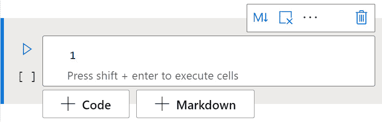
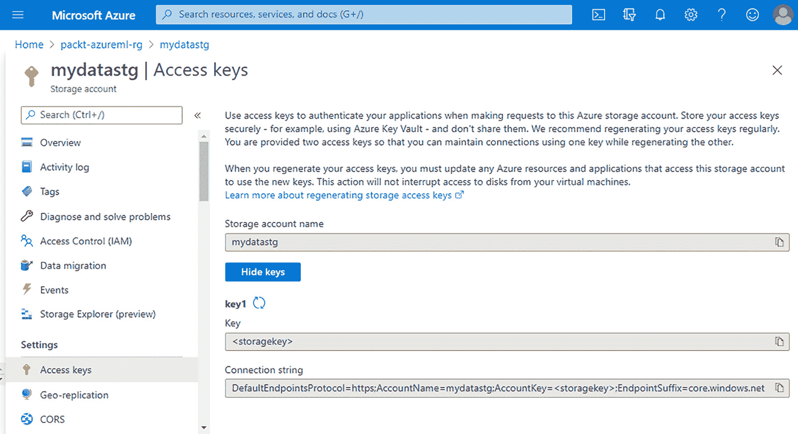
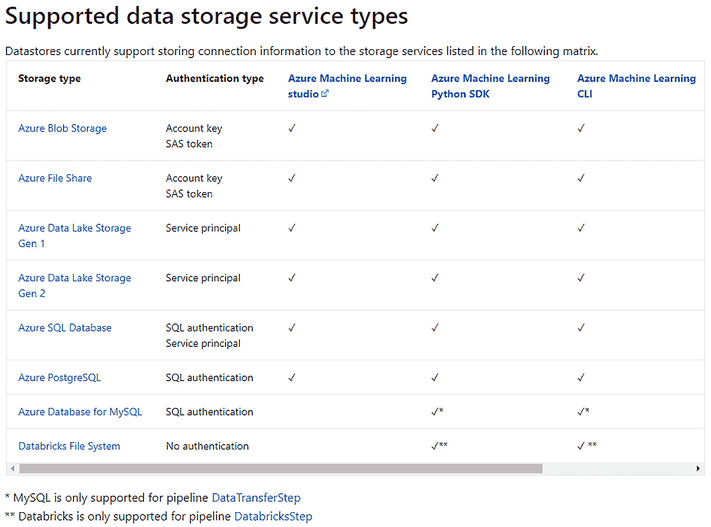
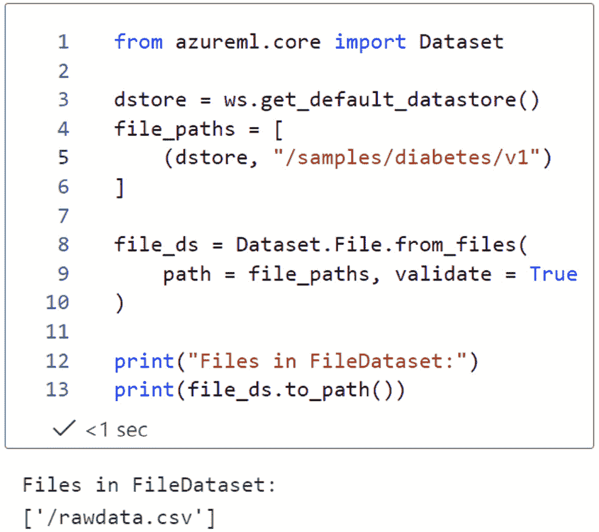
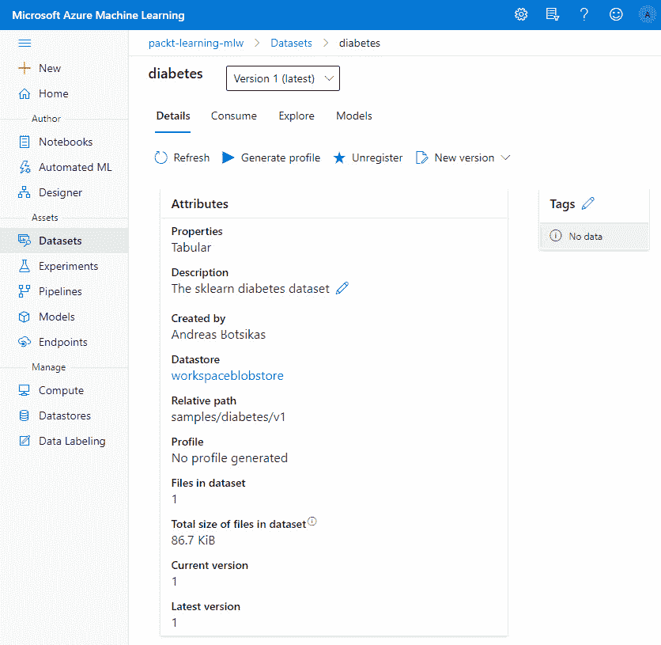
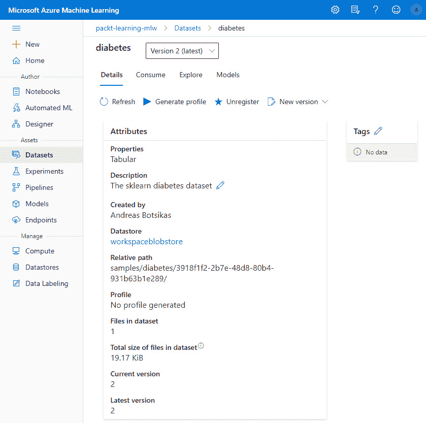
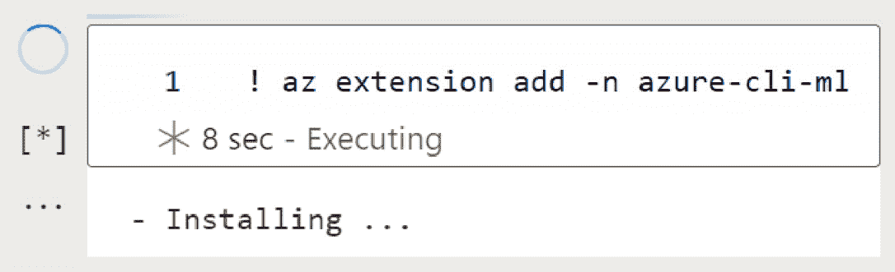

第七章:AzureML Python SDK
在本章中，你将了解 AzureML Python 软件开发工具包 ( SDK )是如何构建的，以及如何使用它，这是 DP-100 考试的关键。您将学习如何使用内置于 AzureML Studio 门户网站的笔记本体验，这是一个提高编码效率的工具。使用笔记本编辑器，您将编写一些 Python 代码，以便更好地理解如何管理工作区中注册的计算目标、数据存储和数据集。最后，您将重温我们在第 2 章 、部署 Azure 机器学习工作区资源中查看的 Azure CLI，使用 AzureML 扩展执行工作区管理操作。这将允许您编写脚本并自动化您的工作区管理活动。
在本章中，我们将讨论以下主要话题:
- Python SDK 概述
- 使用 AzureML 笔记本
- 使用 AzureML SDK 进行基本编码
- 使用 AzureML CLI 扩展
技术要求
您需要访问 Azure 订阅。在该订阅中，您将需要一个packt-azureml-rg。你将需要一个Contributor或者OwnerT3，如 第二章 、部署 Azure 机器学习工作区资源中所述。
你还需要对 Python 语言有一个基本的了解。本章中的代码片段针对 Python 版或更高版本。您应该知道 Jupyter 笔记本如何工作的基本知识，以及您在一个单元格中定义的变量如何存在于其他单元格的执行上下文中。
你可以在 GitHub 的http://bit.ly/dp100-ch07找到这一章的所有笔记本和代码片段。
Python SDK 概述
AzureML SDK 是一个 Python 库，允许您与 AzureML 服务进行交互。它还为您提供了数据科学模块，将在您的机器学习之旅中为您提供帮助。AzureML SDK 可以通过 Python 到 R 的互操作性包在 R 编程语言中获得。
SDK 由几个包组成，这些包将不同类型的模块分组，您可以将这些模块导入到您的代码库中。所有微软支持的模块都放在以azureml开头的包里，比如azureml.core和azureml.train.hyperdrive。下图提供了 AzureML SDK 最常用包的概述，以及您将在本书和考试中看到的关键模块:
图 7.1–azure ml SDK 模块和重要的类
注意，azureml.core包中存在的所有关键类也可以从相应的子模块中导入。例如，Experiment类可以用任何一种方式导入，如下所示:
from azureml.core import Experiment from azureml.core.experiment import Experiment
两个代码片段将加载相同的类，您只需要使用其中一个。第一个从azureml.core包加载类，而第二个从experiment模块(一个名为experiment.py的文件)加载类，该模块是azureml.core包的一部分。如果您在可能阅读的各种代码示例中注意到这种类型的差异，请不要感到惊讶。
重要说明
出于考试目的，您不需要记住这些包，但是您必须从下拉列表中选择合适的包。例如，你可能被要求完成一些涉及到AutoMLConfig的代码，你可能不得不在azureml.automl包和azureml.pipeline包之间做出选择，当你读完接下来的几章时，这个选择会变得更加明显。本书中的代码示例在脚本之上导入了所有必需的包，以帮助您熟悉类的位置。
在本章中，您将重点关注允许您控制 AzureML 工作区的 SDK 类，以及部署在工作区中的计算资源、数据存储和可以在工作区中注册的数据集。
在下一节中，您将学习如何利用 AzureML Studio 内置的笔记本体验来编写 Python 脚本。
在 AzureML 笔记本上工作
AzureML Studio 提供了与一些代码编辑器的集成，允许您编辑笔记本和 Python 脚本。这些编辑器由 第 4 章 、配置工作区中提供的计算实例驱动。如果您已经停止了该计算实例以节省成本，请导航到管理 | 计算并启动它。从这个视图中，您可以打开 AzureML Studio 集成的所有第三方编码编辑器，如下面的屏幕截图所示:
图 7.2–Azure Studio 集成的第三方代码编辑器体验列表
最广为人知的开源数据科学编辑器是 Jupyter Notebook 和它的新兄弟 JupyterLab。您可以通过单击前面屏幕截图中显示的相应链接来打开这些编辑环境。这将打开一个新的浏览器选项卡，如下面的屏幕截图所示:
图 7.3–计算实例提供的 JupyterLab 和 Jupyter 编辑体验
除了这些第三方代码编辑体验，AzureML Studio 还提供了一个内置的增强笔记本编辑器，允许您在 Studio 界面中编辑、共享和协作，如下面的截图所示。这个编辑器是在 Jupyter Notebook 服务的基础上创建的，但提供了更好的代码编辑体验，例如内嵌错误突出显示、自动代码完成、弹出您将要调用的方法的参数信息，以及其他被称为智能感知的功能:
图 7.4–azure ml Studio 内置的增强笔记本体验
notebook 编辑器附带了一个嵌入式示例库，其中包含最新的笔记本目录，展示了最新 AzureML SDK 的几乎所有功能。找到相关笔记本后，您可以查看其内容，如果您想要修改它，可以在您的工作区中克隆它，该操作将复制 Jupyter 笔记本以及与该笔记本相关的附带脚本和数据，如以下屏幕截图所示:
图 7.5–帮助您提升 AzureML SDK 功能的示例笔记本
重要说明
这些笔记本都是最新版本的 AzureML SDK。托管这些笔记本的代码库可以在 https://github.com/Azure/MachineLearningNotebooks/的 GitHub 上找到。您可以使用 GitHub 提交问题，或者使用 GitHub 的搜索体验来搜索代码片段。
每一个 AzureML 工作区都附带一个存储账号，如 第二章部署 Azure 机器学习工作区资源中所述。这个存储帐户包含一个前缀为 code- 的文件共享，它托管工作区内所有可用的笔记本和脚本，如下面的屏幕截图所示。该文件夹共享位置中的文件是您之前在 Studio 体验中的文件选项卡中看到的文件:
图 7.6–文件共享的 Azure 门户视图，该文件共享托管 AzureML 工作区中的所有代码文件
每个用户在用户文件夹下有一个单独的文件夹，他们可以在那里组织他们的文件。有权访问特定 AzureML 工作区的所有用户都可以访问所有文件。这使得共享代码变得非常容易。通过在浏览器中打开文件，您可以将有权访问 AzureML 工作区的人指向该文件；然后，您可以从浏览器导航栏共享该 URL。
在本节中，您将创建一个笔记本，用于编写和执行本章中的代码片段。要处理您的文件，请导航到chapter07，然后创建一个名为chapter07.ipynb的笔记本。
点击用户名旁边的三个点，如下图所示。在那里，您可以创建文件夹结构并从本地计算机上传文件。点击新建文件夹选项，如以下截图所示:
图 7.7–azure ml Studio 的笔记本体验区中的创建新文件夹选项
填写弹出的对话框，创建一个名为chapter07的文件夹。选择那个文件夹，点击三个点。然后，选择Users/<username>/chapter07，这意味着该文件将被放置在新创建的文件夹中。关于chapter07.ipynb，点击创建按钮，如下图所示:
图 7.8–创建一个笔记本来编写和执行本章的 Python 脚本
这将在您的文件夹中创建两个文件:笔记本文件，它将在编辑器窗格中打开，以及一个.amlignore文件，您将在 第八章 ，中读到该文件，尝试 Python 代码:
图 7.9–在 AzureML Studio 中编辑笔记本
- 文件浏览器，您可以在其中创建或上传新文件，以及删除、下载、重命名或移动您或您的同事在此工作区中创建的现有文件。
- 打开文件的名称。请注意，如果您在名称旁边看到一个星号–例如，* chapter 07 . ipynb–这意味着该文件尚未保存。你可以使用 Windows 和 Linux 的 Ctrl + S 快捷键或者 macOS 的 Cmd + S 快捷键来保存文件。或者，您可以从文件选项菜单中选择保存选项，您将在下面读到。
- 文件选项菜单，其中有保存操作和聚焦模式等选项，这些选项扩展了编辑器窗格，占据了大部分浏览器标签空间。这是一个基于您当前正在编辑的文件类型的动态菜单。在前面的屏幕截图中，打开了一个笔记本，菜单提供了额外的操作，如清除输出、重启 Python 内核或检查 Python 内核中当前加载的变量。您也可以在 Jupyter 或 JupyterLab 中编辑相同的文件，方法是点击菜单图标，即带有四条垂直线的图标，并从编辑器选项中选择相应的编辑器。尤其是对于非常流行的免费跨平台代码编辑器 VS Code 来说，主栏中提供了编辑 VS Code 中的选项。
- 管理当前正在编辑特定文件的计算实例的能力。在这个部分中，您可以快速创建一个新的计算实例或启动/停止一个现有的实例。
- 能够选择执行笔记本的环境。默认情况下，选择 AzureML Python 内核，这是已经安装了 AzureML SDK 的环境。如果您正在编辑一个 R 文件，您可以将内核更改为 R 内核，或者如果您想要定制您正在工作的环境，您可以创建自己的内核。
- The main editor pane. This is where you can modify the selected file.
在您的例子中，编辑器窗格将是空的，并且可以看到一个空的单元格，如下面的屏幕截图所示。每个单元格可以包含 Markdown 格式的文本或 Python 代码。点击弹出菜单，选择 M ↓ 图标，可以将单元格转换为代码单元格:
图 7.10–一个空的代码单元格
- 点击 M ↓ 图标，然后点击编辑图标，在单元格中添加以下降价文本:
# Chapter 07 code snippets This notebook contains all code snippets from chapter 7.
- Hit Shift + Enter on your keyboard to finish editing, execute the cell, which in this case will render the formatted text, and move the cursor to the next cell. By default, the next cell will be a code one. Add the following Python code inside the cell:
print('Hello world')请注意，当您开始键入时，会出现一个包含代码建议的弹出窗口，您可以使用箭头键选择这些代码建议。你可以通过点击键盘上的输入按钮来确认你的选择。该列表是一个智能列表，它显示以您键入的内容开始的类。它还显示经常使用的类，您可能会拼错或忘记输入一些字母。例如，下面的屏幕截图显示了
PermissionError类，因为您可能忘记键入print语句不完整，波浪下划线将指示该部分代码中的语法错误。要执行一个代码单元格，可以点击 Shift + Enter 组合键，也可以点击单元格左侧的圆形按钮:
图 7.11–IntelliSense 建议适合当前脚本范围的方法和类
如果在您正在执行的代码单元中出现错误，错误消息将出现在单元的底部，回溯将出现在单元的输出部分，如下面的屏幕截图所示。您可以更新单元格的内容并重新运行单元格来修复此错误:
图 7.12–笔记本单元执行期间的脚本错误
在本节中，您学习了如何使用内置的笔记本体验来创作 Python 脚本。在下一节中，您将开始编写利用 AzureML SDK 的代码片段。
使用 AzureML SDK 进行基本编码
您将使用的第一个类是 AzureML Workspace，这个类允许您访问工作区内的所有资源。要创建对工作空间的引用，您需要以下信息:
ab05ab05-ab05-ab05-ab05-ab05ab05ab05。你可以在 Azure 门户的你正在使用的订阅的属性标签中找到这个 ID。- 资源组名称:包含 AzureML 工作区组件的资源组。
- 工作区名称:T2 azure ml 工作区的名称。
您可以通过运行以下赋值将此信息存储在变量中:
subscription_id = '<Subscription Id>' resource_group = 'packt-azureml-rg' workspace_name = 'packt-learning-mlw'
创建对工作区的引用的第一种方法是实例化Workspace类，如下面的代码片段所示:
from azureml.core import Workspace ws = Workspace(subscription_id, resource_group, workspace_name)
这是您在 第 4 章 、配置工作区中看到的代码片段，当时您创建了一个数据集，并浏览了该数据集的消费选项卡。
重要说明
本书假设您将在上一节创建的笔记本中编写代码，并且您将通过发出pip instal azureml-sdk命令使用azureml-sdk包编辑笔记本。在这种情况下，系统会提示您使用交互式身份验证来验证您的设备，您将在下一节中读到这方面的内容。
创建对 AzureML 工作空间的引用的另一种方法是使用Workspace类的get()方法，如下面的代码片段所示:
from azureml.core import Workspace ws = Workspace.get(name=workspace_name, subscription_id=subscription_id, resource_group=resource_group)
这里，关于ws变量，您分配了一个对 AzureML 工作空间的引用，该引用与您在本节开始的workspace_name、subscription_id和resource_group变量中指定的name、subscription_id和resource_group值相匹配。
重要说明
在 Python 中，可以通过按名称或按位置传递参数来调用函数。在前面的例子中，我们通过按名称传递参数来调用Workspace.get()——也就是说，我们明确指定对于name参数，我们传递的是workspace_name变量作为它的值。使用这种方法时，参数的顺序并不重要。在之前的例子中，我们通过按位置传递参数来实例化Workspace类。你没有使用workspace_name=workspace_name任务。这意味着您根据声明的顺序为Workspace类的构造函数的参数赋值。在这本书里，以及在考试中，你会看到完成作业的两种方式。
前面的两种获取 AzureML 工作空间引用的方法是相同的。然而，它们的主要问题是它们硬编码了脚本要连接的工作区。假设您想要与朋友共享一个笔记本，并且您已经在该笔记本中硬编码了订阅 ID、资源名称和工作区名称。您的朋友必须手动编辑该单元格。当您想要编写一个在多种环境中运行的脚本时，这个问题会变得更加明显，比如开发环境、质量保证环境和生产环境。
Workspace类提供了from_config()方法来解决这个问题。该方法在文件夹树结构中搜索config.json文件，该文件采用以下格式，包括本节开头提到的所有信息:
{
"subscription_id": "<Subscription Id>",
"resource_group": "packt-azureml-rg",
"workspace_name": "packt-learning-mlw"
}
在计算实例的情况下，该文件位于根文件夹(/config.json)中，并且是在 AzureML 工作空间中提供计算实例时自动创建的。如果希望从本地计算机运行相同的脚本，可以创建一个类似的文件，将其放在正在编辑的 Python 脚本旁边，并编写以下代码来获取对 AzureML 工作空间的引用:
from azureml.core import Workspace
ws = Workspace.from_config()
print(f"Connected to workspace {ws.name}")
如果您想启动一个新的 AzureML 工作空间，可以使用Workspace.create()方法提供一个。以下代码片段在西欧地区创建了一个 AzureML 工作区:
from azureml.core import Workspace new_ws = Workspace.create( name='packt-azureml-sdk-mlw', subscription_id=subscription_id, resource_group='packt-azureml-sdk-rg', create_resource_group=True, location='westeurope')
这个代码片段将在订阅中创建一个名为packt-azureml-sdk-mlw的 AzureML 工作空间，其 ID 由subscription_id变量指定。这个资源将被部署在packt-azureml-sdk-rg资源组中，如果它还不存在的话，将会被创建。
重要说明
Contributor role at the resource group level to be able to deploy the AzureML workspace with the SDK.
要删除您刚刚部署的工作区，您可以使用下面的代码片段:
new_ws.delete(delete_dependent_resources=True)
这段代码删除了由new_ws变量引用的工作区，并删除了依赖资源，即存储帐户、密钥库和与 AzureML 工作区一起部署的应用洞察资源。
在本节中，您学习了如何通过 Python 代码获取对工作空间资源的引用并对其进行操作。本节假设您一直在使用 studio web UI 的内置笔记本编辑器，因此您不必进行身份验证。如果您想在您的计算机上运行相同的代码，您必须进行身份验证才能访问资源，这是我们将在下一节中讨论的内容。
从您的设备进行身份验证
2020 年 3 月，azure ml Studio中的笔记本体验要求您向计算实例进行认证。这是一个你只需要做一次的过程，就像点击认证按钮一样简单，这个按钮将会出现在笔记本电脑体验中。如果您从本地计算机运行相同的代码，或者如果您第一次尝试在计算实例中的终端内执行 Python 脚本，您必须运行 AzureML SDK 命令。一个提示将要求您进行身份验证，如下面的屏幕截图所示:
图 7.13–第一个命令执行期间请求的交互式身份验证
如果您看到此消息，请导航至所提供的链接，您将被要求输入提示中显示的请求代码。在这种情况下，这是 MYRNDCODE 。此代码是从您的计算机位置使用您的身份登录请求的唯一标识符。选择您计划用于访问各种 Azure 资源(包括 AzureML 工作区)的帐户。下图显示了整个交互式身份验证流程:
图 7.14–在计算实例中使用交互式登录进行身份验证
重要说明
请求代码是一个短命代码，它将在 15 分钟后过期。如果您未能在该时间范围内完成该过程，将会出现错误，您将不得不重新开始。
如果您的帐户可以访问多个 Azure 活动目录 ( AADs )，例如，您个人的试用订阅 AAD 和您公司的 AAD，您可能需要手动指定要向哪个 AAD 租户进行身份验证。这可以通过使用以下代码片段手动调用交互式身份验证过程来完成:
from azureml.core.authentication import \ InteractiveLoginAuthentication InteractiveLoginAuthentication(tenant_id="<AAD tenant id>")
该代码启动上图所示的设备身份验证流程。<AAD tenant id>是一个 GUID，可以通过访问 AAD 资源从 Azure 门户获取。
在本节中，您学习了交互式身份验证，它允许您从任何设备访问 AzureML 工作区。当您尝试在远程计算机上执行脚本或尝试执行 Azure CLI 命令时，应使用此身份验证方法。一旦通过身份验证，令牌就会存储在您正在执行InteractiveLoginAuthentication的计算机中，并且在令牌过期之前，不会提示您再次登录。
在下一节中，您将开始使用对工作区的已验证引用来部署计算目标，您可以使用这些目标来远程执行脚本。
使用计算目标
正如我们在 第 4 章 、配置工作区中提到的，在配置计算资源部分，计算资源是允许您远程执行脚本的机器。AzureML SDK 允许您列出工作区中现有的计算目标，或者根据需要提供新的目标。
要枚举您已经提供或附加到工作区的计算目标，您可以使用对 AzureML 工作区的引用，该工作区是您使用ws = Workspace.from_config()分配给ws变量的。工作区对象有一个名为compute_targets的属性。这是一个 Python 字典，它将所有计算实例名称作为键，并将对该计算实例的引用作为值。要枚举并打印出这个列表，可以使用下面的代码:
for compute_name in ws.compute_targets:
compute = ws.compute_targets[compute_name]
print(f"Compute {compute.name} is a {type(compute)}")
输出应该至少列出您正在执行脚本的ComputeInstance区域，还可能列出您在第 4 章 、配置工作区中 创建的AmlCompute集群。您会注意到所有的计算类型都是在azureml.core.compute包的模块中定义的。
重要说明
这段代码假设您已经初始化了ws变量，这是您之前在笔记本上按照使用 AzureML SDK 部分的基本编码中的说明所做的事情。如果您关闭 compute 实例，内核将停止，您通过执行 notebook 单元格定义的所有变量都将丢失。如果您想继续在笔记本上工作，最简单的方法是重新运行所有的单元格，这将确保您已经初始化了所有的变量。
另一种获取计算目标引用的方式是使用ComputeTarget构造函数。您需要传入Workspace引用和您正在寻找的计算目标的名称。如果目标不存在，将引发一个ComputeTargetException异常，您必须在代码库中处理它，如以下脚本所示:
from azureml.core import ComputeTarget
from azureml.exceptions import ComputeTargetException
compute_name = 'gpu-cluster'
compute = None
try:
compute = ComputeTarget(workspace=ws, name=compute_name)
print(f"Found {compute_name} which is {type(compute)}")
except ComputeTargetException as e:
print(f"Failed to get compute {compute_name}. Error: {e}")
ComputeTarget类提供了create()方法，允许您提供各种计算目标，包括计算实例(ComputeInstance类)、计算集群(AmlCompute类)和 Azure Kubernetes 服务(AKSCompute类)目标。
重要说明
每当您从 AzureML Studio web UI、Azure CLI 或 SDK 部署计算实例或计算群集时，计算目标将在您的机器学习工作区所在的相同资源组和相同 Azure 区域中提供。
为了提供一个计算目标，您需要创建一个从ComputeTargetProvisioningConfiguration抽象类继承的配置对象。在下面的示例中，脚本试图定位名为cpu-sm-cluster的计算集群。如果集群存在，它将一个对集群的引用赋给cluster变量。如果集群不存在，脚本会创建一个AmlComputeProvisioningConfiguration类的实例，并将其分配给config变量。这个实例是通过AmlCompute类的provisioning_configuration()方法创建的。此config用于创建集群，并等待工作区中的注册完成，显示创建日志:
from azureml.core.compute import ComputeTarget, AmlCompute
compute_name = 'cpu-sm-cluster'
cluster = None
if compute_name in ws.compute_targets:
print('Getting reference to compute cluster')
cluster = ws.compute_targets[compute_name]
else:
print('Creating compute cluster')
config = AmlCompute.provisioning_configuration(
vm_size='Standard_D1',
max_nodes=2)
cluster = ComputeTarget.create(ws, compute_name, config)
cluster.wait_for_completion(show_output=True)
print(f"Got reference to cluster {cluster.name}")
这个脚本指定了虚拟机的大小(vm_size参数)。虚拟机将会是Standard_D1，这是一个Standard_NC6、Standard_NV24s_v3和Standard_ND40rs_v2。注意所有的尺寸都是从 N 开始的。
该脚本仅指定计算集群将拥有的最大节点数(max_nodes参数)。如果不指定最小节点数(min_nodes参数)，该参数将是默认值 0。这意味着默认情况下，群集将缩减到 0 个节点，在没有作业运行时不会产生任何计算成本。你可以在微软官方 Python SDK 参考页面上找到provisioning_configuration()方法所有参数的所有默认值，如下图截图所示，或者通过执行help(AmlCompute.provisioning_configuration)使用 Python help命令:
图 7.15–AML compute 类的 provisioning_configuration 方法的文档
计算集群中最少有 0 个节点的缺点之一是，您必须等待计算节点被分配，然后您提交的作业才能执行。为了节省这一空闲时间，通常在工作日期间扩大集群的最小甚至最大节点，然后在工作时间之后更改这些值以节省成本。要更改计算集群的节点数量，您可以使用 AzureML Studio web UI 或 Azure CLI，甚至可以使用以下代码更新计算集群的min_nodes属性:
from azureml.core.compute import AmlCompute
for ct_name, ct in ws.compute_targets.items():
if (isinstance(ct, AmlCompute)):
print(f"Scalling down cluster {ct.name}")
ct.update(min_nodes=0)
重要说明
可以通过 AzureML Studio web 门户、CLI、SDK 和 ARM 模板来更改计算集群的最小和最大节点数。在 2020 年 10 月之前，你还可以通过 Azure 门户改变节点的数量，这个功能从那以后就被移除了。
在本节中，您学习了如何创建或获取对可用于执行脚本的计算目标的引用。在下一节中，您将学习如何通过 SDK 附加到各种数据源。
定义数据存储
正如我们在 第 4 章 、配置工作区中提到的，在连接到数据存储库部分，数据存储库是数据驻留的引擎，并向任何获得授权的人提供访问。AzureML SDK 允许您附加现有的数据存储来访问底层数据。
在本节中，您将把存储帐户的 blob 容器附加到您的工作区。假设您有一个名为 mydatastg 的存储帐户。这个存储帐户有一个名为 existing-container 的 blob 容器，其中包含您要分析并训练模型的 CSV 文件，如下面的屏幕截图所示:
图 7.16–在 Azure 门户中看到的 mydatastg 存储帐户中的容器
重要说明
从 Azure 门户提供新的存储帐户和添加容器是一项简单的任务，不在考试范围之内。请注意，存储帐户具有唯一的名称。这意味着您可能无法调配名为 mydatastg 的存储帐户，因为它属于其他人。您可以使用 AzureML 工作区提供的现有存储帐户来执行这些步骤。您可以通过 Azure 门户将现有容器容器添加到该存储帐户，也可以使用已经存在的 azureml 容器。
要将这个容器注册为 AzureML 工作空间中的新数据存储，您需要遵循以下步骤:
- Before going into your notebook, you will need the storage account name and the account key. This information is located in the Azure portal, in the Settings | Access keys tab of the storage account resource, as shown in the following screenshot:
图 7.17–连接到存储帐户所需的存储帐户名称和密钥
- 转到您的
chapter07.ipynb笔记本，在一个新的代码单元格中，将该信息分配给以下 Python 变量:storage_name = 'mydatastg' storage_key = '<storagekey>' storage_container = 'existing-container'
- To register the blob container as a new datastore named
my_data_store, you can use theregister_azure_blob_container()method of theDatastoreclass, as shown in the following snippet:from azureml.core import Datastore dstore = Datastore.register_azure_blob_container( workspace=ws, datastore_name="my_data_store", container_name=storage_container, account_name=storage_name, account_key=storage_key, create_if_not_exists=False )
正如预期的那样，方法需要一个对
Workspace区域的引用，新的数据存储将在这里创建，作为一个参数。另外，请注意，create_if_not_exists参数被设置为False，如果 blob 容器不存在，这将使该方法引发一个带有错误代码ContainerNotFound的AzureMissingResourceHttpError异常。类似于 blob 容器，可以通过 AzureML SDK 的
Datastore类注册所有支持的数据存储类型，如下图所示。例如，您可以使用register_azure_data_lake_gen2()方法连接到 Azure 数据湖第 2 代数据存储，或者使用register_azure_sql_database()方法连接到 Azure SQL 数据库:图 7.18-官方文档页面中支持的数据存储服务类型
- 要获得对连接的数据存储的引用，可以使用
Datastore类构造函数，如下面的代码片段所示:from azureml.core import Datastore dstore = Datastore.get(ws,"my_data_store")
- In Chapter 4, Configuring the Workspace, in the list of datastores, you learn how to set one of the registered datastores to the default one for the AzureML workspace. The
Workspaceclass offers a shortcut that gives a reference to that store using theget_default_datastore()method:dstore = ws.get_default_datastore()
在本书的其余部分，您将使用默认的数据存储来存储数据。
- 引用 Azure blob 容器(
AzureBlobDatastore类)或 Azure 文件共享(AzureFileDatastore类)的数据存储可以通过 SDK 上传和下载文件。下面的代码片段加载了DataFrame，然后存储为本地 CSV 文件。一旦文件被存储，脚本将获得对Workspace区域的默认数据存储的引用，其中在ws变量中被引用，并使用upload()方法将该文件上传到/samples/diabetes/v1/rawdata.csv:T7 - 该文件将出现在使用 AzureML 工作区创建的存储帐户中。您可以在 Azure 门户中找到它，方法是导航到存储帐户，选择名称以 azureml-blobstore- 开头的 blob 容器，然后导航到 samples / diabetes / v1 文件夹，如下面的屏幕截图所示:
图 7.19–注册为默认数据存储的 blob 容器中的上传数据
在本节中，您学习了如何将现有的 Azure blob 容器附加到 AzureML 工作空间中的新数据存储。您还了解了如何轻松地获取对工作区默认数据存储的引用，然后将一个 CSV 文件上传到该数据存储。在下一节中，您将学习如何定义数据集，数据集是一种构造，它将帮助您独立于数据的存储位置来处理数据。
使用数据集
正如我们在 第 4 章 、配置工作空间中提到的，在使用数据集一节中，数据集是您用于训练和推理的数据之上的抽象层。它们包含对物理数据位置的引用，并提供一系列元数据来帮助您理解它们的形状和统计属性。它们不会复制驻留在数据存储中的数据。AzureML 提供了两种类型的数据集:
FileDataset允许您在一个或多个数据存储中引用单个文件或多个文件。FileDataset的一个常见例子是用于训练计算机视觉模型的图像。TabularDataset允许您引用表格结构数据，这些数据可以存储在数据存储中的单个文件或多个文件中，也可以直接存储在关系数据存储中，如 SQL servers。您在上一节中加载的糖尿病DataFrame是一个典型的表格数据集。您可以通过解析各种文件来创建TabularDataset，包括 CSV、TSV、Parquet 和 JSON 文件。如果您的数据包含具有时间戳的列/特征，或者文件存储在包含日期模式(如/<year>/<month>/file.csv)的文件夹结构中，您可以启用TabularDataset的时间序列特征，这允许您对数据集执行基于时间的过滤。
为了获得一些实际的经验，您可以定义一个FileDataset来引用您在上一节中上传到默认数据存储中的 CSV 文件。虽然 CSV 表示表格数据，但它也是一个文件，一些FileDataset可以引用的东西。
- In a new cell in your notebook, type the following code:
from azureml.core import Dataset dstore = ws.get_default_datastore() file_paths = [ (dstore, "/samples/diabetes/v1") ] file_ds = Dataset.File.from_files( path = file_paths, validate=True ) print("Files in FileDataset:") print(file_ds.to_path())在这个代码片段中，有一个对工作站默认数据存储的引用。
- 现在，您可以创建一个由
Datastore及其相对路径组成的数组。每个元组引用特定Datastore中的一个文件或文件夹。在这种情况下，您引用的是默认Datastore中的samples/diabetes/v1文件夹。如果需要，可以使用通配符*来加载多个子文件夹或部分文件名。例如，下面的元组数组加载存储在/weather/<year>/<month>/<day>.csv:file_paths = [ (dstore, "/weather/2021/*/*.csv") ]
中的 2021 年所有月份的天气数据的所有 CSV 文件 - If you wanted to explicitly load the data for the first day (
01.csv) of January (01), February (02), and March (03) only, then you would use the following array of tuples:file_paths = [ (dstore, "/weather/2021/01/01.csv"), (dstore, "/weather/2021/02/01.csv"), (dstore, "/weather/2021/03/01.csv") ]
出于性能原因，建议将数组的大小保持在每个数据集少于 100 个数据路径引用。
- 回到本节开头的代码片段，现在可以使用
from_files()方法创建一个未注册的FileDataset。这里，您必须将数据路径数组作为参数传递。您还必须验证是否可以通过方法加载数据。如果文件夹不存在，或者数据存储受到私有端点的保护，并且不能从执行代码的计算机直接访问，您将得到DatasetValidationError。validate参数的默认值是True，您可以通过在该参数中传递False来禁用该验证。 - Once you have created
FileDataset, you can get a list of files that were referenced by invoking theto_path()method. The output of these two prints should look as follows:图 7.20–引用单个 CSV 文件的未注册文件数据集
- For the CSV files, a far better approach would be to define a
TabularDatasetthat could parse the file and provide us with a pandasDataFrame. To do so, copy the following code in a new cell:tabular_dataset = Dataset.Tabular.from_delimited_files( path=file_paths, validate=False) df = tabular_dataset.to_pandas_dataframe() print(len(df))
在这个代码片段中，您重用了创建
FileDataset时使用的file_paths属性。这一次，您将使用from_delimited_files()方法创建一个未注册的TabularDataset。另外，请注意，您显式地跳过了验证，以便可以从当前 compute (validate=False)加载数据，从而加快声明过程。DataFrame，并在调用to_pandas_dataframe()方法时将其赋给df变量。在调用len()方法时，您得到了DataFrame拥有的行数。 - So far, the datasets that you have created have been unregistered, meaning that they did not register within the AzureML workspace, nor were they listed in the
register()method:tabular_dataset.register( workspace=ws, name="diabetes", description="The sklearn diabetes dataset")
重要说明
如果您已经注册了同名的数据集，您将无法重新运行该单元格。要注册数据集的新版本，您必须使用如下的
create_new_version参数:tabular_dataset.register(workspace=ws, name="diabetes", create_new_version=True)该方法要求您指定想要注册
TabularDataset的工作空间和注册名称。或者，您可以传递描述、标记以及是否使用已在工作空间中注册的特定名称创建数据集的新版本。注册数据集后，您可以在 Studio web UI 中查看注册信息，如下面的屏幕截图所示:图 7.21–工作空间中注册的表格数据集
- If, instead of
TabularDataset, you have a pandasDataFramethat you want to register, you can use theregister_pandas_dataframe()method, as shown in the following code snippet:Dataset.Tabular.register_pandas_dataframe( dataframe=df, target=(dstore,"/samples/diabetes"), name="diabetes", description="The sklearn diabetes dataset")
请注意，在这个代码片段中，您正在传递对
dfpandasDataFrame的引用，并且您正在请求将那个DataFrame存储在由dstore变量引用的默认数据存储中的/samples/diabetes文件夹中。该方法将创建一个具有 GUID 名称的新文件夹，并以 Parquet 文件格式存储数据。由于数据集已经注册并指向不同的路径，该命令将创建数据集的新版本。在工作室体验中，您会注意到数据集的版本 2 被注册。这个版本有一个不同的相对路径，如下所示:图 7.22-糖尿病数据集的新版本，直接从熊猫数据框架中注册
- Once you have registered a dataset, either
FileDatasetorTabularDataset, you can retrieve it using theget_by_name()method of theDatasetclass using the following code snippet:from azureml.core import Dataset diabetes_dataset = Dataset.get_by_name( workspace=ws, name='diabetes')
可选地，您可以指定
version参数，默认情况下是latest。 - 前面的代码片段返回了一个
TabularDataset类的实例，但是数据还没有被加载。您可以使用TabularDataset类的各种方法部分加载数据集，如下面的代码片段所示:partial_dataset = diabetes_dataset \ .skip(10) \ .take(2) \ .keep_columns(['0','target'])
partial_datasetis aTabularDatasetinstance that was created fromdiabetes_dataset. This dataset skips the first 10 rows ofdiabetes_dataset, keeps two rows, and then drops all the columns other than the columns named0andtarget. No data was loaded during the execution of this multiline statement. Having this unregisteredpartial_datasetdataset defined, you can load the data into a pandasDataFrameusing the following code:df = partial_dataset.to_pandas_dataframe() df.head()
这将显示一个由两行和两列组成的小表，如下面的屏幕截图所示:
图 7.23–从切片表格数据集中加载的小数据框
AzureML dataset 类的这种惰性加载功能让您可以灵活地分割大型数据集，而不必将它们加载到内存中。
到目前为止，您已经学习了如何使用 Python SDK 来部署计算目标、定义数据存储和创建数据集。在下一节中，您将学习如何使用您在 第 2 章 、部署 Azure 机器学习工作区资源中看到的 Azure CLI 工具执行类似的操作，在使用 Azure CLI 部分。
使用 AzureML CLI 扩展
在 第二章 ，部署 Azure 机器学习工作区资源中，你学习了如何使用 Azure CLI 以及如何安装azure-cli-ml扩展。这个扩展使用你在本章中看到的 Python SDK 来执行各种操作。要使用 Azure CLI，您可以执行以下操作之一:
- 在 Azure portal 中打开云壳，就像你在 第二章部署 Azure 机器学习工作区资源中所做的那样。
- 在本章中使用的计算实例中打开一个终端。
- 使用 Jupyter notebooks 的 shell 分配功能，该功能允许您通过使用感叹号()使用底层 shell 来执行命令。)，又名为梆。
在本节中，您将使用笔记本，它允许您存储这些步骤，并在将来需要时重复这些步骤:
- The first thing you will need to do is install the
azure-cli-mlextension in the Azure CLI of the compute instance you are currently working on. Create a new code cell in the notebook you have been editing so far and add the following code:! az extension add -n azure-cli-ml
注意，在 第二章 、部署 Azure 机器学习工作区资源中，你执行了同样的命令，没有感叹号前缀。该命令的输出应类似于以下内容:
图 7.24–安装 AzureML 扩展
- 然后，您需要使用
az login命令登录。该命令将触发一个设备认证过程，类似于本章开始时您第一次尝试通过 SDK 连接到工作空间时使用的过程。运行以下命令:! az login
- If you have access to multiple Azure subscriptions, you will need to select the one you are targeting using the following code snippet:
! az account set --subscription "<subscription id>"
从现在开始，您可以使用 AzureML CLI 对工作区执行操作。
重要说明
如果您的订阅中有多个 AzureML 工作区，您将需要指定每个 AzureML CLI 命令的目标工作区和资源组。为此，你将需要使用
-g和-w参数，我们在 第 2 章 、部署 Azure 机器学习工作区资源中看到了这些参数。 - 要列出工作区中的所有计算目标，请使用下面的代码片段:
! az ml computetarget list -g packt-azureml-rg -w packt-learning-mlw -o table
- 然后，您可以使用下面的命令更新
cpu-sm-cluster，使其拥有 0 个最小节点:! az ml computetarget update amlcompute --name cpu-sm-cluster --min-nodes 0 -g packt-azureml-rg -w packt-learning-mlw
- 要获得在工作区中注册的默认数据存储，可以使用下面的命令:
! az ml datastore show-default -g packt-azureml-rg -w packt-learning-mlw
- Finally, you can list the datasets registered in the workspace using the following snippet:
! az ml dataset list -g packt-azureml-rg -w packt-learning-mlw -o table
该命令的结果应该类似于以下内容:

图 7.25–azure ml CLI 中数据集列表的表格格式输出
AzureML CLI 提供对 SDK 选项的完全访问，包括创建和分离计算目标、数据存储甚至定义数据集的能力。对于考试，您不需要记住命令，只要您已经理解 CLI 正在使用 SDK，并且您可以使用 SDK 做的大多数事情都有一个等效的 CLI 命令。
总结
在这一章中，你学习了 AzureML Python SDK 是如何构建的。您还发现了 AzureML 笔记本编辑器，它允许您编写 Python 脚本。然后你和 SDK 一起工作。您通过管理附加到 AzureML 工作空间的计算目标开始了您的编码之旅。然后，您附加了新的数据存储，并获得了对现有数据存储的引用，包括工作区的默认数据存储。然后，您使用了各种文件和基于表格的数据集，并学习了如何通过在工作区中注册它们来重用它们。
最后，您使用了 AzureML CLI 扩展，这是一个利用了您在本章中探索的 Python SDK 的客户端。
在下一章中，您将在这些知识的基础上学习如何在数据科学实验阶段使用 AzureML SDK。您还将学习如何跟踪数据科学实验的指标，以及如何通过在计算集群中运行脚本，将培训扩展到更大的计算中。
问题
请回答以下问题，检查您对本章中讨论的主题的了解程度:
- What is the default minimum number of nodes for an AzureML compute cluster?
a.0
b.一
c.等于最大节点数
- You upload a CSV file to the default datastore that contains credit card transaction details. Which of the following methods should you use to create a dataset reference?
a.
Dataset.File.from_files()b.
Dataset.Tabular.from_delimited_files()c.
Workspace.from_csv_files()d.
Datastore.from_csv_files() - How can you force the creation of a blob container during the registration process of an Azure blob-based datastore?
a.将
force_create=True参数传递给Datastore.register_azure_blob_container()方法。b.将
create_if_not_exists=True参数传递给Datastore.register_azure_blob_container()方法。c.将
force_create=True参数传递给Datastore.register_container()方法。b.将
create_if_not_exists=True参数传递给Datastore.register_container()方法。
延伸阅读
本节提供了一个有用的 web 资源列表，这些资源将有助于您扩展 AzureML SDK 和本章中使用的各种第三方库的知识:
- AzureML 中支持的数据存储服务类型:https://docs . Microsoft . com/en-us/azure/machine-learning/how-to-access-data # supported-data-storage-service-types
- 对
DataFrameAPI 的引用:https://pandas . pydata . org/pandas-docs/stable/reference/API/pandas。DataFrame.html - 对从 scikit-learn 库中加载的糖尿病数据集的引用:https://sci kit-learn . org/stable/modules/generated/sk learn . datasets . load _ diabetes . html
- AzureML SDK Python API 浏览器，其中列出了所有的包、类和方法:https://docs.microsoft.com/en-us/Python/api/?view=azure-ml-py
- AzureML CLI 扩展引用:https://docs . Microsoft . com/CLI/azure/ml(v1)？view=azure-cli-latest
- 免费电子书-学习 Python 编程-第二版:https://www . packtpub . com/free-ebook/Learn-Python-Programming-Second-Edition/9781788996662